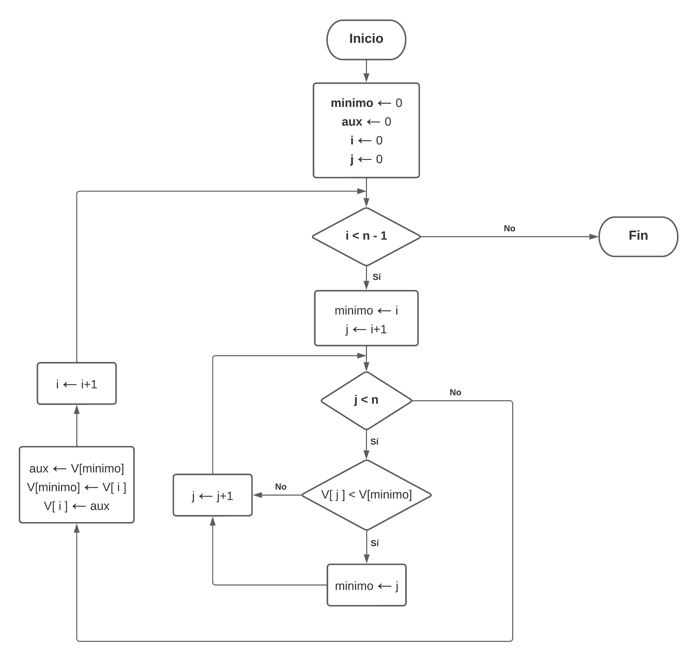
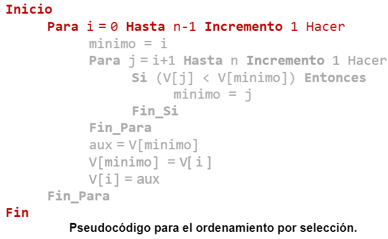

Funcionamiento del algoritmo
A continuación, se describirá brevemente cómo funciona el ordenamiento por selección:
1. Inicialización
Se elige inicialmente a uno de los elementos del arreglo a ordenar como el mayor o menor elemento (Dependiendo del criterio de ordenamiento elegido) del arreglo de manera temporal.
2. Comparación
Se compara el elemento elegido con los otros elementos del arreglo con el propósito de verificar si existe alguno que sea mayor o menor que el elemento elegido.
3. Intercambio
Después de comparar cada uno de los elementos del arreglo con el elemento elegido, si se ha encontrado un elemento más grande o pequeño que el elegido inicialmente, entonces se intercambia la posición de ambos elementos, colocando al elemento encontrado dentro de la primera posición del arreglo.
4. Repetición del proceso
Se repite el mismo proceso para cada uno de los elementos del arreglo, seleccionando de forma secuencial cada uno de ellos para verificar si existe algún elemento más pequeño (o más grande) que estos dentro de los elementos del arreglo que aún no se encuentran ordenados.
Al finalizar cada iteración, se coloca al elemento más pequeño (o más grande, según el criterio de ordenamiento elegido) en las primeras posiciones del arreglo, delante del último elemento considerado como el más grande o pequeño.
5. Finalización
El algoritmo finaliza cuando se haya llegado al último elemento del arreglo, momento en el que se considerara que el arreglo está ordenado.
Diagrama de flujo

Pseudocódigo

Características
- Es más eficiente en arreglos con pocos elementos.
- Por la forma en la cual trabaja, se considera como un algoritmo que aplica comparaciones para ordenar un conjunto de datos.
- Es eficiente en memoria debido a que el proceso de ordenamiento se realiza en el mismo arreglo en el que se encuentran los elementos a ordenar (No requiere el uso de otro arreglo).
- No se recomienda para arreglos de gran tamaño.